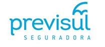

<title>Mais Segura</title>
<header class="section page-header">
    <app-nav-bar></app-nav-bar>
    <div class="line pt-2 pb-2 d-none d-lg-block">
        <div class="container">
          <div class="content">
            <div class="logo">
              
            </div>
            <div class="mx-auto">
                <h3 class="text-center py-3 py-lg-0">+SEGURA</h3>
            </div>
            <div class="logo">
                
            </div>
          </div>
        </div>
    </div>
</header>
<section class="section section-lg bg-image-pattern text-center" style="background-image: url(../../assets/bg-pattern-01.jpg); padding: 30px 0 60px 0 ">
    <div class="container mt-5 mt-lg-0">
        <h6 class="px-lg-5 mx-lg-5" style="font-size: 20px; color: #404b52; font-weight: bold;">Check-up médico, orientação psicológica, personal fitness, nutriline, proteção pessoal, assistências à filhos, pets, veículos, residencial e farmacêutica</h6>
        <p class="lead-custom" style="font-size: 18px; font-weight: bold; margin-top: 25px">A partir de <span>R$ 16,90</span> por mês, você tem acesso a todas as assistências e coberturas.</p>
        <div class="row row-30 text-lg-left justify-content-center">
            <div class="col-md-9 col-lg-6 col-xl-5">
                <!--  -->
                <style>
                    .embed-container {
                        position: relative;
                        padding-bottom: 56.25%;
                        height: 0;
                        overflow: hidden;
                        max-width: 100%;
                    }

                    .embed-container iframe,
                    .embed-container object,
                    .embed-container embed {
                        position: absolute;
                        top: 0;
                        left: 0;
                        width: 100%;
                        height: 100%;
                    }
                </style>
                <div class='embed-container'><iframe src='https://www.youtube.com/embed/GtcduqnFQTc' frameborder='0' allowfullscreen></iframe></div>
            </div>
            <div class="col-md-9 col-lg-6 col-xl-7">
                <h6 style="font-size: 20px">Estar tranquila e protegida é fundamental para você conquistar tudo o que quer.</h6>
                <p style="font-size: 16px;">Só com o +Segura Previsul, você conta com coberturas especiais para câncer de mama e colo do útero, invalidez permanente total ou parcial por acidente e morte por qualquer causa. E ainda tem acesso a mais de 10 assistências para ficar sempre bem.</p>
                <p style="font-size: 16px;">A Previsul quer que todas as mulheres se sintam +Seguras para serem mais: +livres, +leves e muito +cheias de vida. Por isso, foi criado o +Segura Previsul, o seguro feminino mais completo do mercado, com coberturas para câncer de mama, colo do útero e as melhores assistências para você se sentir sempre tranquila e protegida.</p>
                <div class="text-center pt-3 pt-sm-5">
                    <a id="contrateMaisSegura01" class="btn btn-primary" href="https://cota-mais-individual.previsul.com.br/individual?hash=kZwYmKHKnJ3XsWSRpSWA5Q%3D%3D&sistema=Mulher" target="_BLANK">Faça uma cotação e contrate!</a>
                </div>
            </div>
        </div>
    </div>
</section>
<!-- Our advantages section-->
<section class="section section-lg bg-image-pattern context-dark" style="background-image: url(../../assets/bg-pattern-02.jpg)">
    <div class="container">
        <h4 class="responsive-h4">Assistências</h4>
        <div class="row row-20 row-lg-30 block-advantage-wrapper">
            <div class="col-md-6 col-lg-4">
                <div class="block-advantage h-100">
                    <h6 class="block-advantage-title title-size"><a href="#">CHECK-UP MÉDICO 1º DIAGNÓSTICO</a></h6>
                    <p class="block-advantage-text text-size">Quando solicitado, através da Central de Atendimento, será disponibilizada ao Segurado, uma consulta médica preventiva com um clínico-geral credenciado bem como o seu retorno para análise os exames, dentro do prazo de 30 (trinta) dias. Mais de 10 exames como Hemograma, Eletrocardiograma de Repouso, etc...</p>
                    <a id="segsm_cm" href="#" onclick="openPdf('pdf/Check-UpMedico1Diagnostico.pdf')" class="more-size">Saiba mais</a>
                </div>
            </div>
            <div class="col-md-6 col-lg-4">
                <div class="block-advantage h-100">
                    <h6 class="block-advantage-title title-size"><a href="#">ORIENTAÇÃO PSICOLÓGICA</a></h6>
                    <p class="block-advantage-text text-size">A assistência de Orientação Psicológica disponibiliza ao Segurado e seus familiares orientação psicológica via telefone com profissionais qualificados. Pode ser utilizado ao longo de toda a vigência da apólice, sem limitação de acionamento. O atendimento é realizado por psicólogos e assistentes sociais e funciona 24 (vinte e quatro) horas por dia, 7 (sete) dias por semana.</p>
                    <a id="segsm_op" href="#" onclick="openPdf('pdf/OrientacaoPsicologica.pdf')" class="more-size">Saiba mais</a>
                </div>
            </div>
            <div class="col-md-6 col-lg-4">
                <div class="block-advantage h-100">
                    <h6 class="block-advantage-title title-size"><a href="#">ASSISTÊNCIA À FILHOS</a></h6>
                    <p class="block-advantage-text text-size">Baby Sitter e transporte para frequência às aulas. O Serviço de Assistência à Filhos tem como objetivo auxiliar os filhos do Segurado no caso de ocorrência de acidente pessoal envolvendo o Segurado ou seus filhos.</p>
                    <a id="segsm_fi" href="#" onclick="openPdf('pdf/AssistenciaaFilhos.pdf')" class="more-size">Saiba mais</a>
                </div>
            </div>
            <div class="col-md-6 col-lg-4">
                <div class="block-advantage h-100">
                    <h6 class="block-advantage-title title-size"><a href="#">PERSONAL FITNESS</a></h6>
                    <p class="block-advantage-text text-size">Programa com sugestões de atividades físicas que respeita a individualidade, direcionando para os objetivos do Segurado, conforme idade, sexo, bem como sua disponibilidade. O trabalho poderá ser complementado e obterá melhores resultados, se for desenvolvido com a parceria do programa Nutriline.</p>
                    <a id="segsm_pf" href="#" onclick="openPdf('pdf/AssistenciaPersonalFitness.pdf')" class="more-size">Saiba mais</a>
                </div>
            </div>
            <div class="col-md-6 col-lg-4">
                <div class="block-advantage h-100">
                    <h6 class="block-advantage-title title-size"><a href="#">NUTRILINE</a></h6>
                    <p class="block-advantage-text text-size">O serviço de Assistência Nutriline disponibiliza ao Segurado informações, via telefone com profissional qualificado, sobre alimentação e nutrição de forma simples e objetiva. A cada contato, o Segurado receberá dicas e comentários motivando-o a utilizar o programa de forma contínua e a alcançar seus objetivos.</p>
                    <a id="segsm_nu" href="#" onclick="openPdf('pdf/AssistenciaNutriline.pdf')" class="more-size">Saiba mais</a>
                </div>
            </div>
            <div class="col-md-6 col-lg-4">
                <div class="block-advantage h-100">
                    <h6 class="block-advantage-title title-size"><a href="#">PROTEÇÃO PESSOAL</a></h6>
                    <p class="block-advantage-text text-size">O Serviço de Proteção Pessoal tem como objetivo auxiliar o Segurado no caso de ocorrência de evento previsto, sendo esses: acidente pessoal, assalto, agressão, roubo e furto envolvendo o Segurado,seu veículo ou residência e ferimentos pessoais decorrentes destes, devidamente declarados às autoridades competentes.</p>
                    <a id="segsm_pp" href="#" onclick="openPdf('pdf/AssistenciaProtecaoPessoal.pdf')" class="more-size">Saiba mais</a>
                </div>
            </div>
            <div class="col-md-6 col-lg-4">
                <div class="block-advantage h-100">
                    <h6 class="block-advantage-title title-size"><a href="#">ANIMAIS DE ESTIMAÇÃO</a></h6>
                    <p class="block-advantage-text text-size">Transporte veterinário emergencial, assistência veterinária emergencial, consultas veterinárias, informações sobre vacinas, aplicação de vacinas em domicílio, envio de ração, acionamento ou agendamento de Leva e Traz, hospedagem de animais, entre outros benefícios.</p>
                    <a id="segsm_ae" href="#" onclick="openPdf('pdf/AssistenciaaAnimaisdeEstimacaoPET.pdf')" class="more-size">Saiba mais</a>
                </div>
            </div>
            <div class="col-md-6 col-lg-4">
                <div class="block-advantage h-100">
                    <h6 class="block-advantage-title title-size"><a href="#">ASSISTÊNCIA 24 HORAS A VEÍCULOS</a></h6>
                    <p class="block-advantage-text text-size">O Serviço de Assistência 24 horas – Auto e Moto Restrito (Vínculo ao Segurado) tem como objetivo auxiliar o Segurado no caso de ocorrência de evento previsto, sendo esses: acidente, furto ou roubo e incêndio.</p>
                    <a id="segsm_av" href="#" onclick="openPdf('pdf/AssistenciaaVeiculosAutoeMotoRestritoVinculoaoSegurado.pdf')" class="more-size">Saiba mais</a>
                </div>
            </div>
            <div class="col-md-6 col-lg-4">
                <div class="block-advantage h-100">
                    <h6 class="block-advantage-title title-size"><a href="#">ASSISTÊNCIA RESIDENCIAL</a></h6>
                    <p class="block-advantage-text text-size">O Serviço de Assistência Residencial tem como objetivo, a realização serviços na residência habitual do Segurado, de acordo com o Padrão de Serviço Contratado, em caso de evento previsto ou problema emergencial.</p>
                    <a id="segsm_ar" href="#" onclick="openPdf('pdf/AssistenciaResidencial.pdf')" class="more-size">Saiba mais</a>
                </div>
            </div>
            <div class="col-md-6 col-lg-4">
                <div class="block-advantage h-100">
                    <h6 class="block-advantage-title title-size"><a href="#">ASSISTÊNCIA FARMACÊUTICA</a></h6>
                    <p class="block-advantage-text text-size">Assistência Farmacêutica “Farmassist” é um serviço que propicia acesso a medicamentos com descontos, adquiridos em drogarias credenciadas pela Prestadora.</p>
                    <a id="segsm_af" href="#" onclick="openPdf('pdf/AssistenciaFarmaceuticaFarmassist.pdf')" class="more-size">Saiba mais</a>
                </div>
            </div>
        </div>
        <div class="row row-20 row-lg-30 block-advantage-wrapper">
            <div class="col-md-12 col-lg-12 text-center">
                <a id="contrateMaisSegura02" class="btn btn-primary" href="https://cota-mais-individual.previsul.com.br/individual?hash=kZwYmKHKnJ3XsWSRpSWA5Q%3D%3D&sistema=Mulher" target="_BLANK">Faça uma cotação e contrate!</a>
            </div>
        </div>
    </div>
</section>
<web-footer></web-footer>